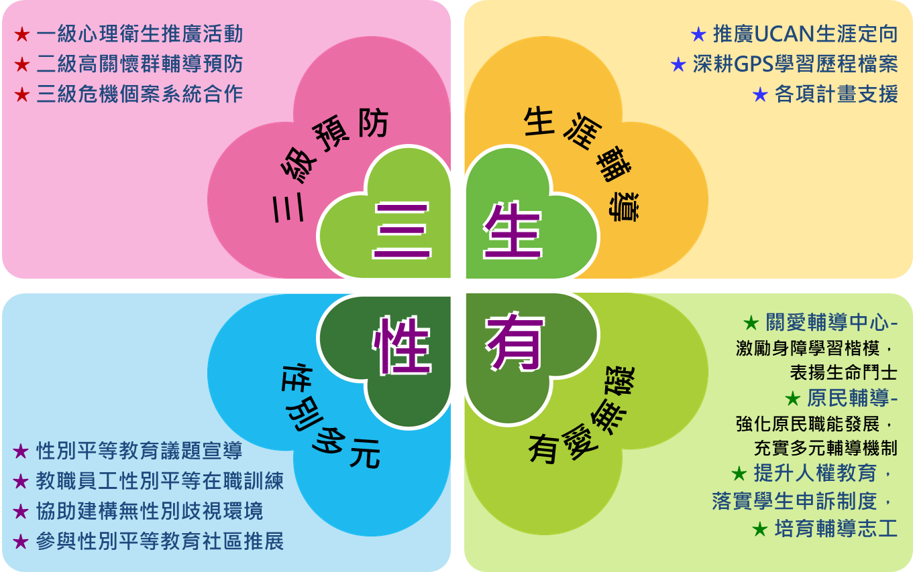
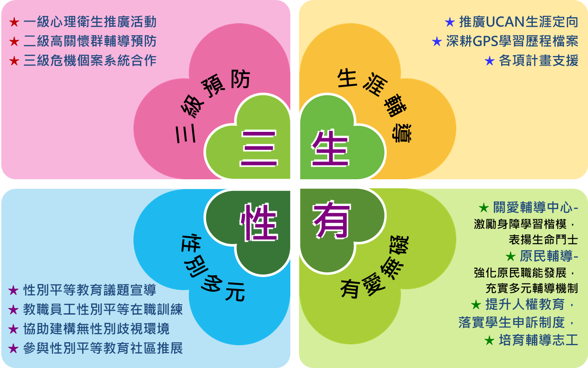
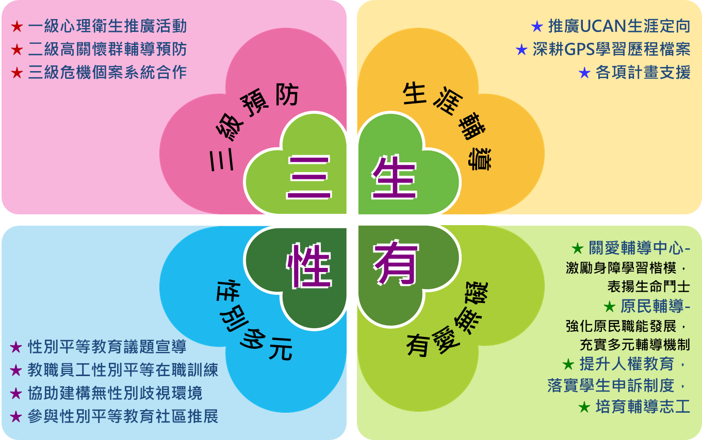

教育理念
我的教育理念是，要教導學生學會學習，因為隨著科技演變，學生學系非常方便，網路飛快，資料隨查即有，因此在資源眾多的情況下，學生要學會的不單單只是會用電腦網路，不只只玩電動，更要學會如何判斷資訊，運用資訊，進而去了解自己喜歡的事物而去自學。
製作人 梁家承

我的教育理念是，要教導學生學會學習，因為隨著科技演變，學生學系非常方便，網路飛快，資料隨查即有，因此在資源眾多的情況下，學生要學會的不單單只是會用電腦網路，不只只玩電動，更要學會如何判斷資訊，運用資訊，進而去了解自己喜歡的事物而去自學。
製作人 梁家承